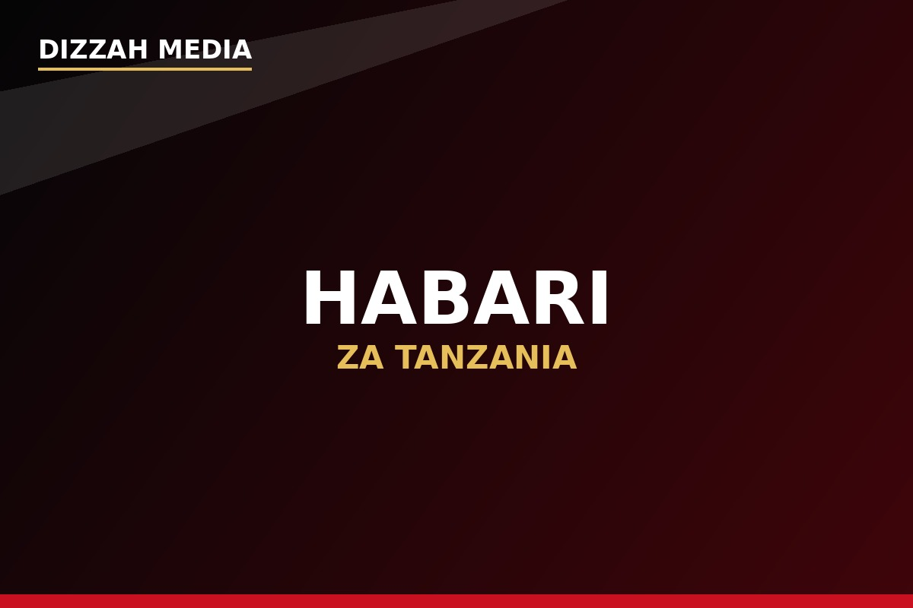

Habari
Taarifa na habari zinazolenga kuwafikisha watazamaji kwenye matukio na mada mbalimbali.
Brand inayokua kutoka Tanzania, ikibeba simulizi, sauti, vipaji na maudhui yanayogusa maisha ya watu.
Dizzah Media ni brand ya Tanzania yenye lengo la kujenga nafasi yake katika ulimwengu wa maudhui ya kidijitali.
Mizizi ya safari hii ipo Butiama, Mkoa wa Mara , huku Dizzah Media ikiwa kwa sasa Mwanza, Tanzania .
Kutoka hapa, safari inaendelea kuelekea hatua kubwa zaidi: Dizzah Media inalenga kuhamishia makao yake makuu Jijini Dar es Salaam hivi karibuni , kama sehemu ya mpango wake wa kupanua shughuli, uzalishaji wa maudhui na mtandao wake.

Mambo muhimu kuhusu utambulisho wa brand.
Brand ya media na digital content kutoka Tanzania.
Hapa ndipo Dizzah Media inapatikana kwa sasa.
Asili ya safari ya Dizzah Media.
Mpango wa kuhamishia makao makuu hivi karibuni.
Kupanua hadhira na uwepo wa Dizzah Media.
Msingi wa mtazamo wa brand.
Kila hatua ina sehemu yake katika kujenga brand.
Mizizi ya safari na asili ya Dizzah Media katika Mkoa wa Mara.
Eneo ambalo Dizzah Media inapatikana na inaendelea kujenga msingi wake kwa sasa.
Lengo ni kuhamishia makao makuu ya Dizzah Media jijini Dar es Salaam hivi karibuni.
Kupanua hadhira, maudhui na uwepo wa Dizzah Media zaidi ya mipaka ya Tanzania.
Dizzah Media inalenga kuhamishia makao yake makuu Jijini Dar es Salaam hivi karibuni. Hatua hii ni sehemu ya mwelekeo wa ukuaji wa brand na inalenga kuleta nafasi zaidi za uzalishaji wa maudhui, ushirikiano, vipaji na kufikia hadhira pana zaidi.
Dizzah Media inajenga maudhui yenye mchanganyiko wa habari, simulizi, burudani na mazungumzo.
Taarifa na habari zinazolenga kuwafikisha watazamaji kwenye matukio na mada mbalimbali.
Hadithi za maisha, uzoefu, changamoto, mafanikio na masomo tunayopata katika maisha.
Mazungumzo yanayogusa mapenzi, mahusiano, hisia na maisha ya kila siku.
Video na vipindi vya Live vinavyolenga kujenga ukaribu kati ya Dizzah Media na hadhira yake.
Maudhui ya filamu, drama, productions na Dizzah Originals.
Mazungumzo na maudhui ya kuhamasisha, kuelimisha na kuburudisha.
Dizzah Media inajengwa juu ya safari, ubunifu na shauku ya kusimulia.
Dizzah Media inatoka Tanzania na inalenga kuonyesha uwezo wa brand za Tanzania kufikia hadhira pana zaidi.
Simulizi na mazungumzo ni sehemu muhimu ya safari ya Dizzah Media—kwa sababu kila mtu ana hadithi inayoweza kusimuliwa.
Kuhamia hatua mpya ya uendeshaji ni sehemu ya mpango wa Dizzah Media wa kupanua shughuli na kufikia hadhira kubwa zaidi.
Kila hatua inalenga kuboresha namna maudhui yanavyotengenezwa, kuwasilishwa na kufikishwa kwa watazamaji.
Kujenga Dizzah Media kuwa brand inayotambulika kutoka Tanzania, yenye maudhui yanayogusa maisha ya watu na yenye uwezo wa kufikia hadhira ya Afrika na dunia.
Safari inaendelea. Hatua inayofuata ni kubwa.
Endelea kufuatilia Dizzah Media kwa habari, simulizi za maisha, Love Talk, video, Live, Movies, Originals, Podcasts na Motivation.
Tembelea Dizzah Media Angalia Habari